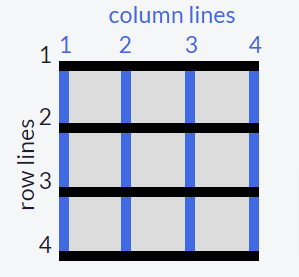

Até este ponto, todas as propriedades que foram discutidas são destinadas para o grid container. A propriedade grid-column é usada nos grid items.
As linhas horizontais e verticais que criam o grid são chamadas de linhas (lines). Essas linhas são numeradas começando com 1 no canto superior esquerdo do grid e movem para a direita para colunas e para baixo para linhas.
Esta é a aparência das linhas em um grid 3x3:
Para controlar a quantidade de colunas que um item ocupará, você pode usar a propriedade grid-column definindo o número da linha em que deseja que o item comece e pare.
Exemplo:
grid-column: 1 / 3;
Isso fará com que o item comece na primeira linha vertical o grid à esquerda e se estenda até a 3ª linha do grid, ocupando duas colunas.
Faça com que o item com a classe item5 ocupe as duas últimas colunas do grid.